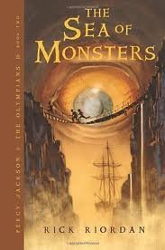
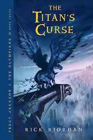
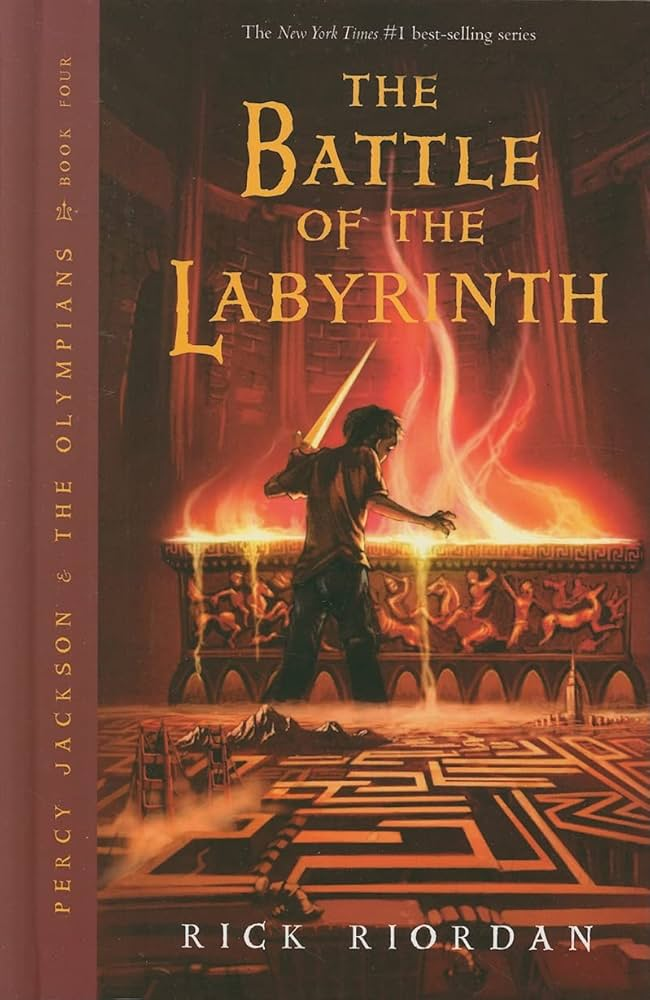
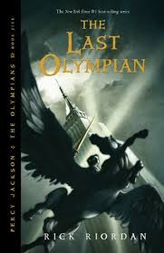

- The song for this book is Riptide by Vance Joy
- The food would be BLUE chocolate chip cookies
- While reading this book I was happy
- "You drool when you sleep."
- "Whats the problem now?" I demanded. "Me, go with you to the...the Thrill Ride of Love? How embarrassing is that? What if somebody saw me?"

Published: 2006
Genre: Fantasy, middle grade
Rating: 5/5
Summary
The Sea of Monsters is the second book, and after Luke left camp, he poisoned Thalia's tree. And so as a result, the magical borders are dying. Percy finds out he has a cyclops half-brother, Tyson. They go to the Sea of Monsters to get the Golden Fleece. Luke is back, still evil, and Kronos is literally in a coffin. They get back to camp with the fleece in time at the end, and accidentally bring Thalia back from the dead
The Sea of Monsters
- If this book were an animal, it would be a tiger shark
- If it were a song, it would be Suffering from Epic the musical( it has sirens)
- If this book were a food, it would be Salmon

Published: 2007
Genre: Fantasy, Middle grade
Rating: 5/5
Summary
In The Titans Curse, we finally meet Thalia (now no longer a tree ), and Bianca and Nico di Angelo. Bianca becomes a Hunter of Artemis at age 12. And then Artemis and Annabeth get kidnapped. Percy sneaks onto a quest to help save his future girlfriend. Bianca dies, and we find Annabeth holding the sky instead of Atlas. Percy then hold the sky while people fight. Then a Big showdown on a mountain happens (RIP Zoey Nightshade). Luke jumps off a cliff. We save Artemis and Annabeth. Atlas is back to holding the sky. Nico finds out he's a son of Hades AND learns his sister died.
ReiviewThe Titans Curse by Rick Riordan
In The Titans Curse, we finally meet Thalia (now no longer a tree ), and Bianca and Nico di Angelo. Bianca becomes a Hunter of Artemis at age 12. And then Artemis and Annabeth get kidnapped. Percy sneaks onto a quest to help save his future girlfriend. Bianca dies, and we find Annabeth holding the sky instead of Atlas. Percy then hold the sky while people fight. Then a Big showdown on a mountain happens (RIP Zoey Nightshade). Luke jumps off a cliff. We save Artemis and Annabeth. Atlas is back to holding the sky. Nico finds out he's a son of Hades AND learns his sister died.
This book was again super good. I love how Percy was slowly starting to get sick of this and just wanted Annabeth back. I also loved how Percy and Thalia's dynamic started to grow. My favorite scene was the Hoover Dam scene. I also loved Bessie, the sea cow.
- If this book were a song, it would be Skyfall by Adele
- If it were a food, it would be French Fries ( from the Hoverdam, of course)
- If it were an animal, it would be a sea cow

Published: 2008
Genre: Fantasy,Middle grade
Rating: 5/5
Summary
The Battle of the Labyrinth is the 4th one. The Labyrinth under the camp connects to EVERYTHING, and Luke plans to use it to attack. Percy and Annabeth lead a quest to find Daedalus, who's actually been alive this whole time. Grover finds Pan (but he's dying), and Nico's dealing with his sister's death. ( Percy gets exploded and meets Clypso, but makes it back to camp half blood in time for his funeral. Which he crashes.) Then there is a battle at camp, Daedalus dies, and Kronos takes over Lukes body.
Review
This book was great. I love how Rachel Elizabeth Dare is back. I also love how we got Percy and Annabeth's first kiss. Speaking of Annabeth, I found her being jealous the whole book super funny. She did not like Rachel for the entire book. Either way, meeting Calyspo was also cool. In the end, this was still a great book.
Now for the fun part!!
The Battle of the Labrinth by Rick Riordan
The Battle of the Labyrinth is the 4th one. The Labyrinth under the camp connects to EVERYTHING, and Luke plans to use it to attack. Percy and Annabeth lead a quest to find Daedalus, who's actually been alive this whole time. Grover finds Pan (but he's dying), and Nico's dealing with his sister's death. ( Percy gets exploded and meets Clypso, but makes it back to camp half blood in time for his funeral. Which he crashes.) Then there is a battle at camp, Daedalus dies, and Kronos takes over Lukes body.
- If this book were a song, it would be Icarus by Bastille
- If it were a soup, it would be Potato soup with bacon bit.
- If it were an animal, it would be a bird
- "I held out a lead figurine of Hades,the little Mythomagic statue Nico had abandoned when he fled camp last winter. Nico hesitated. "I dont play that game anymore. Its for kids." "Its got four thousand attack power," I coaxed. "Five thousand," Nico corrected. "But only if your opponent attacks first." I smiled. "Maybe its okay to still be a kid once in a while."
- "He just raised the dead with coke and cheeseburgers"
- If this book were a song, it would be Fix You by Coldplay, or The Great War or Bigger Than the Whole Sky by Taylor Swift.
- If this book were a food, it would be blue birthday cake.
- If this book were an animal. It would be a whale shark.
- "With great power... comes great need to take a nap. Wake me up later."
- "And it was pretty much the best underwater kiss of all time."

Published: 2009
Genre: Fantasy, middle grade
Rating: 5/5
Summary
The Last Olympian is the big finale. Kronos has full power and attacks Manhattan. Percy finally learns the big prophecy. They all fight, tons of deaths. Luke ends up being the hero in the end by sacrificing himself. Percy turns down immortality for Annabeth( aww, how sweet), and for once, Percy never looks back. And yes, Percy and Annabeth have the BEST underwater kiss ever!!
The Last Olympain